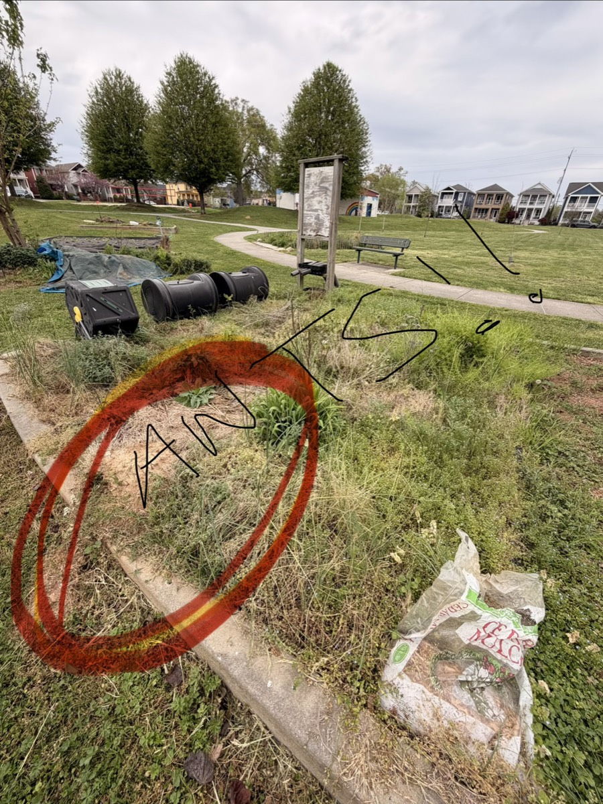
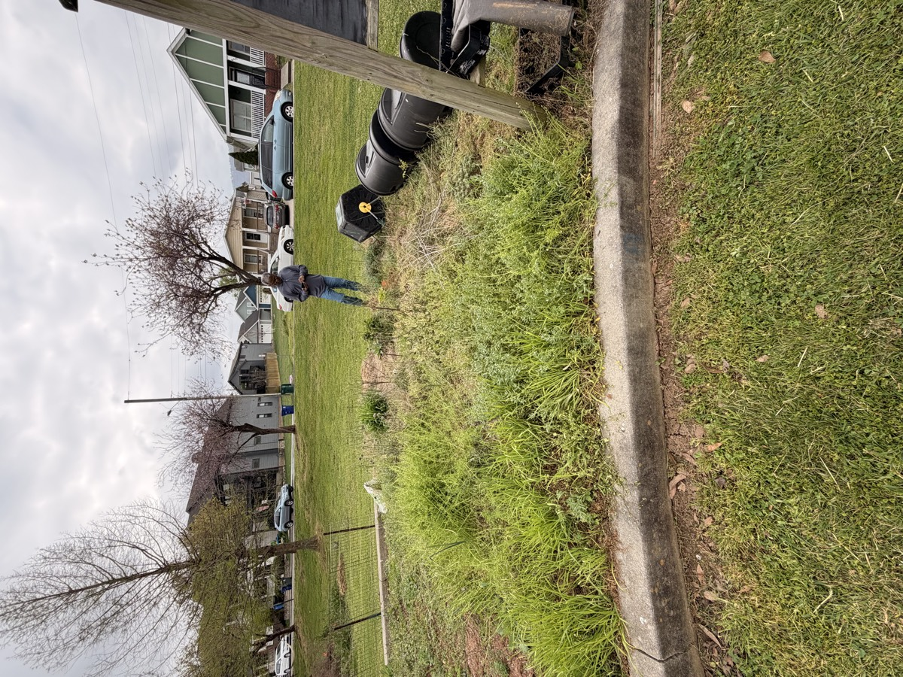
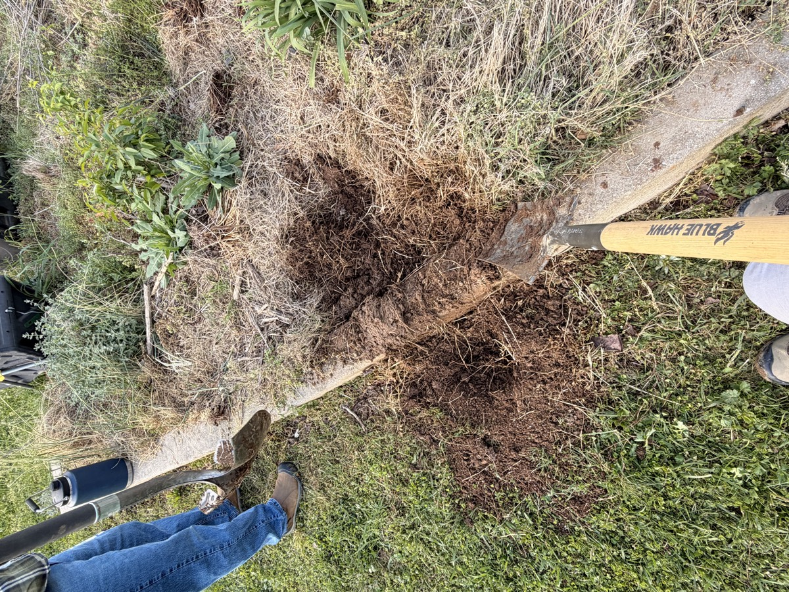
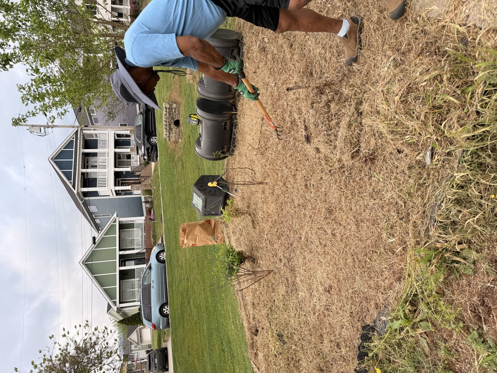
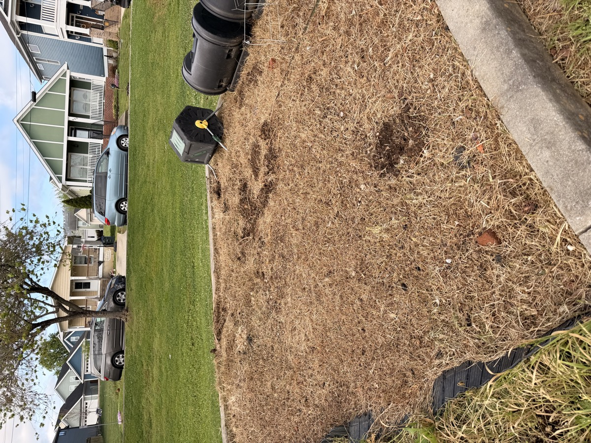
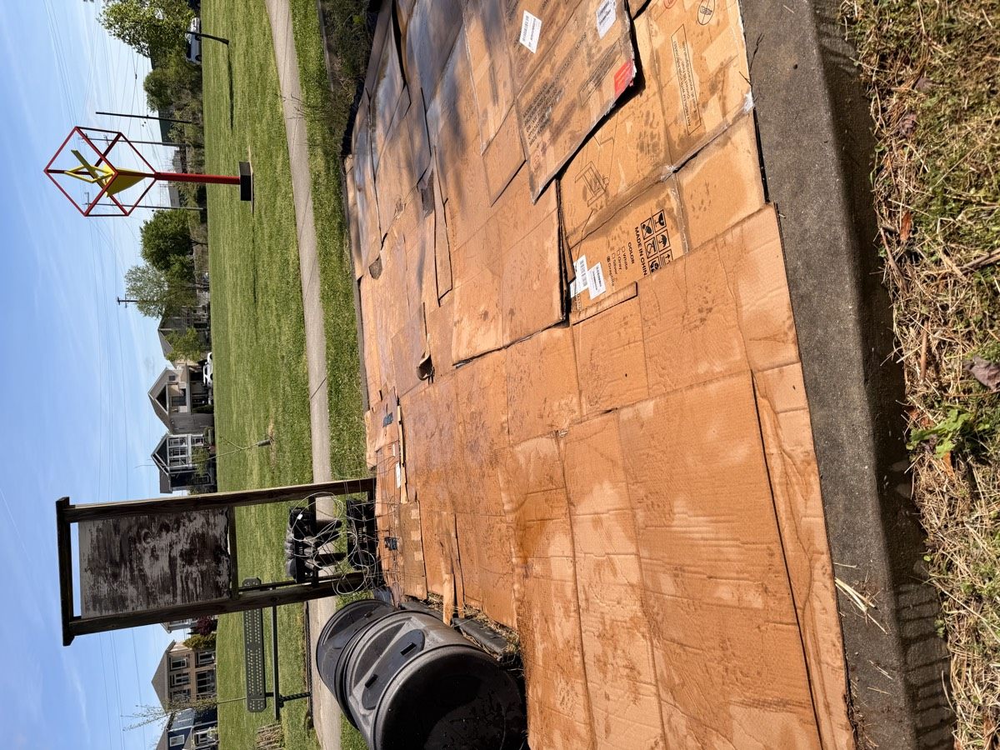
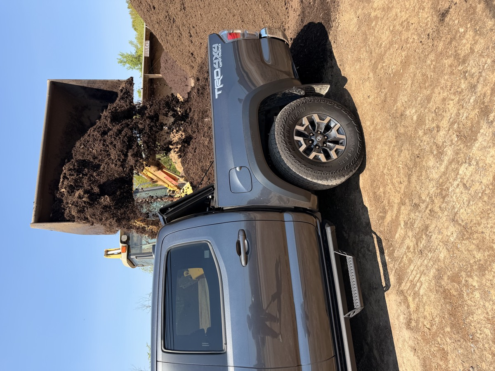
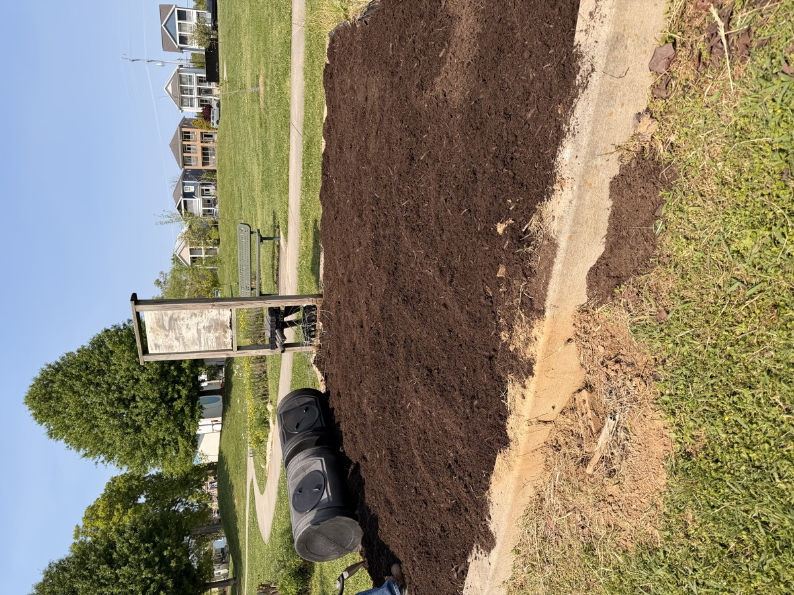
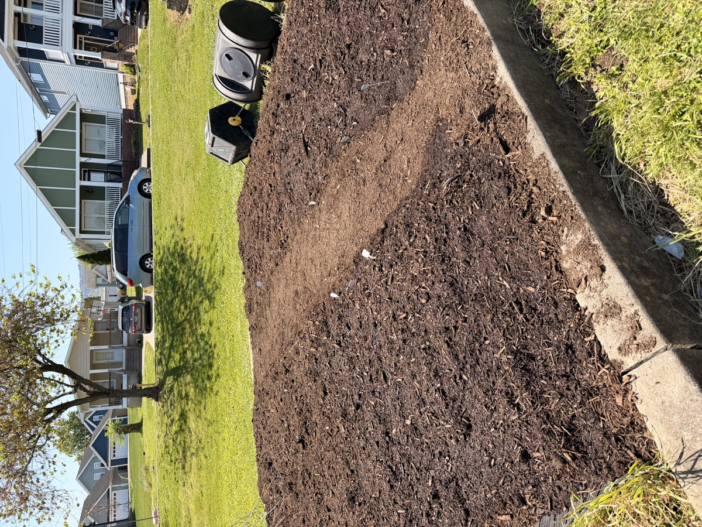
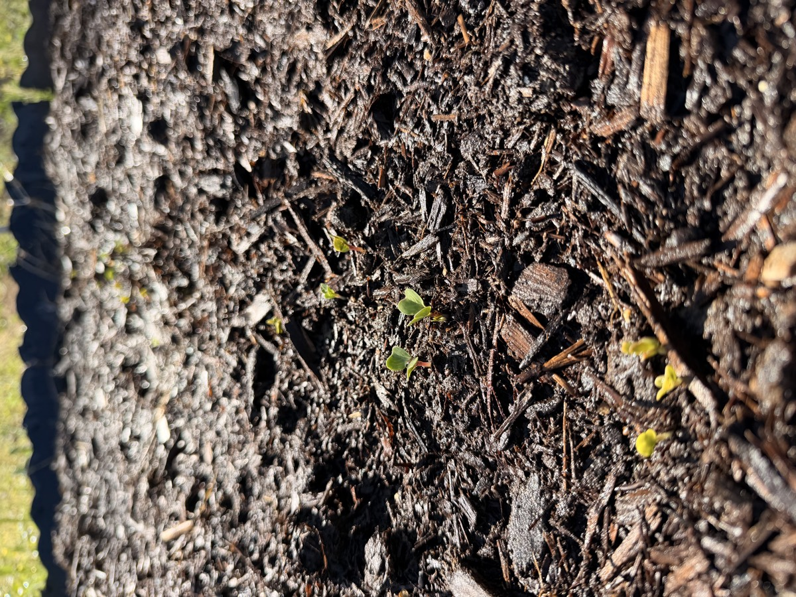

Garden journal
Notes from the dirt. What got planted, what surprised me, what I'm learning.
After years of dormancy, I've put my gardening gloves back on. This is the biggest gardening project I've ever attempted, and I have my dad here for support. It's become a father-son project we didn't know we needed.
This particular plot at Jefferson Heights had been sitting empty long enough to go fully wild. Full-on tree saplings growing inside the curbing, weeds waist-high, and the whole thing infested with fire ants.


First things first: the ants. We treated the plot and waited, then came back to dig out the massive ant hill by hand. It was bigger than it looked from the surface.

Dad came out with a cultivator and went to work clearing everything down to bare earth. Several days of cutting, pulling, and turning soil.

Finally cleared. Just bare dirt and curbing. Hard to believe anything would grow here, but that's the starting point.


Next step: cardboard layer over everything to smother whatever roots and seeds were left. Flattened boxes edge to edge, overlapping the seams.

Then the fun part: loading up the truck with garden mix. Two parts compost and manure, one part gardener's mulch. Several trips to fill a 154 square foot plot four to five inches deep.

Fresh garden mix spread over the cardboard, beds raked smooth, and our first seeds in the ground. Carrots, radishes, bok choy, chard, herbs, and flowers. We marked everything with plant labels so we'd remember what went where. Last frost was Saturday, so we put out tomato and pepper transplants and dropped okra seeds in Sunday morning.


Radish sprouts. The first sign of life. Tiny green leaves pushing up through the dark soil. After all the digging, hauling, and waiting, something is actually growing. We're on our way.